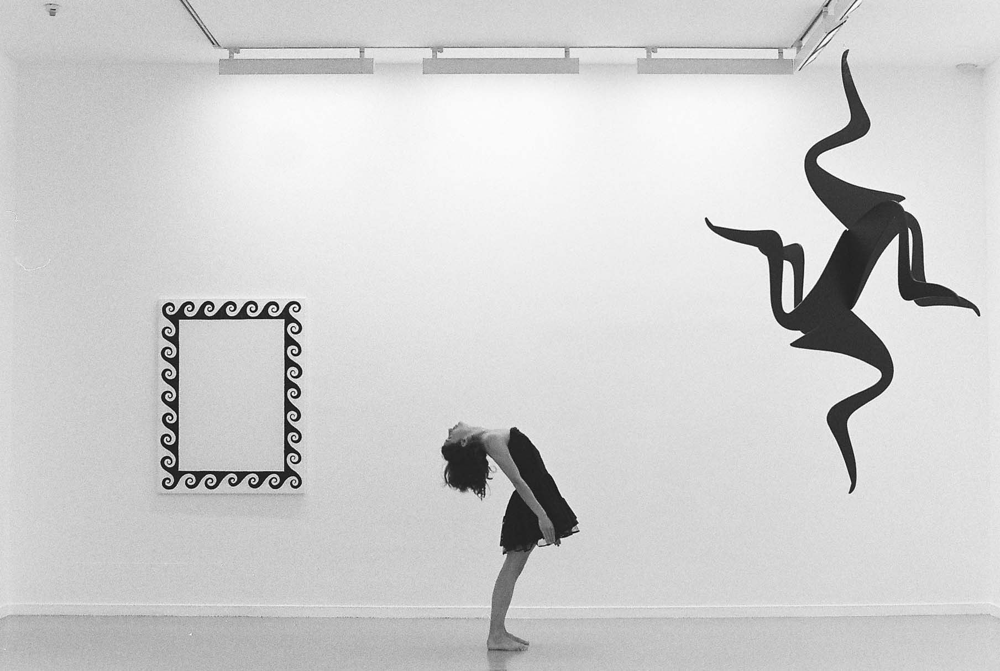

Crystalll collaboration with Alix Eynaudi2005 
photo Alexander Wolff Crystalll was originally created as a black box performance, referring directly to the history of stage representations of female bodies, and using light effects to emphasize the magical appearance of an “unreachable being”.The white cube version invests more on the position of the dancer-as-object, proposing a similar perspective on the sculptures and the dancer. The spectator is invited to observe images, situations, and one’s own expectations towards canons of beauty, femininity, and a dancer becoming an object of aesthetic satisfaction. Shifting the performance to the exhibition space brings about the spectacular expectations towards art, visual or choreographic; Crystalll reveals modes of enhancing mystery, producing awe, while using them in an effective way. Choreography Alice Chauchat and Alix Eynaudi; Dance Alix Eynaudi; Lights Bruno Pocheron: Set design Alexander Wolff; Administration Pauline Roussille; Production Aire; Co-production Maska (Ljubljana), Tanzquartier (Vienna); With the friendly support of Tanzfabrik (Berlin), Monty (Antwerp), Künstlerinnenhof Die Höge and Centre National de la Danse in Paris (for lending their studio) To watch a video, please contact me directly |